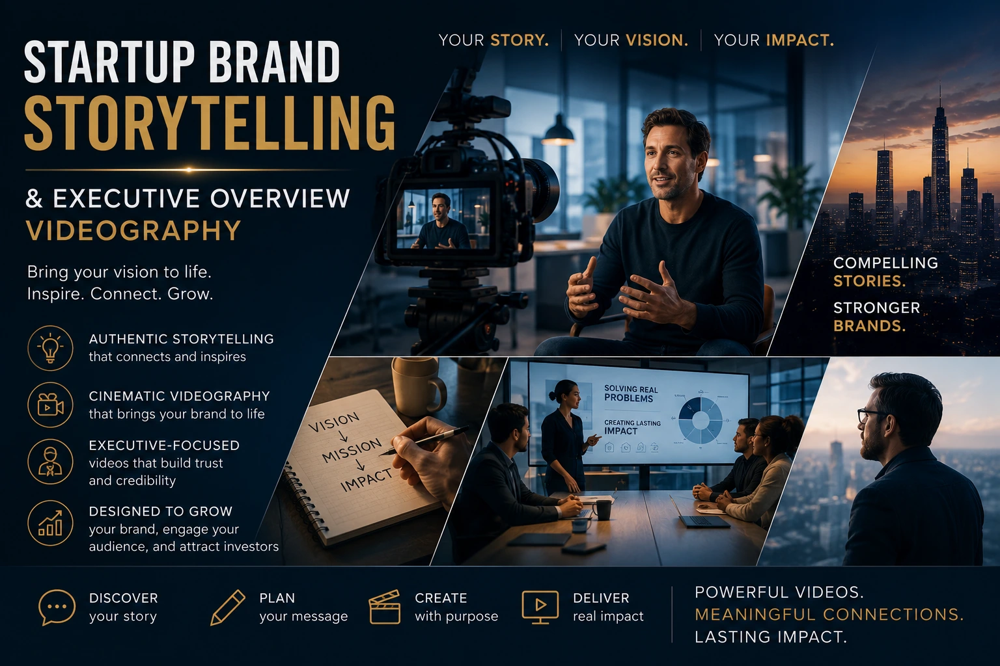
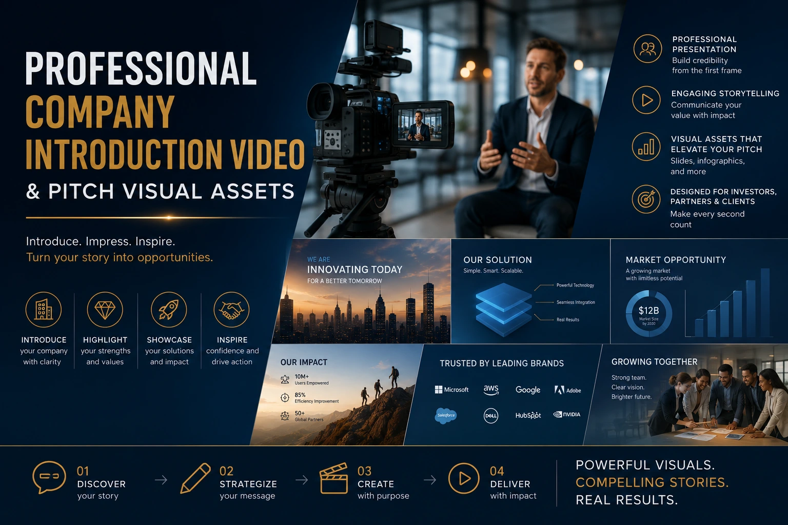

The Investor-Ready Pitch: Crafting a High-Impact Corporate Overview Video for Fundraising
Why the Video Your Investors Watch Before the Meeting Matters More Than the Meeting
The venture capital and angel investment process in India has evolved significantly. Where a decade ago, the first meeting was the first impression, the first impression in 2026 is almost always digital: an email introduction, a pitch deck attachment, a LinkedIn profile — and, for the founders who understand what this moment requires, a professionally produced corporate overview video that communicates the business, the team, and the opportunity in the two to three minutes before an investor decides whether to take the meeting.
An investor who has watched a compelling video for venture capital pitch before agreeing to a first meeting arrives at that meeting already believing in the possibility of the investment. The founder who appears on video with clarity, conviction, and professional production quality has already passed the first filter — the visual credibility filter — that eliminates the majority of cold outreach before a human conversation ever takes place.
This guide covers how to produce a corporate overview video that works as a fundraising asset — the specific structural elements, the startup brand storytelling approach, the executive overview videography principles, and the production standards that make the difference between a video that earns a meeting and one that earns a polite pass.
What Investors Are Actually Evaluating When They Watch Your Video
Before designing the structure and content of a brand video for startup seed round or Series A fundraising, it is worth understanding exactly what a venture capital or angel investor is evaluating when they watch it — because the evaluation criteria are different from a customer watching a brand film or a journalist watching a company overview.
An investor watching a founder's pitch video is evaluating three things in order of priority:
- The founder's conviction and clarity. Can this person articulate the problem, the solution, and the business logic with the kind of precise, informed clarity that suggests they have thought about nothing else for years? Conviction is visible in specificity: a founder who can say "we are solving a problem that costs Indian SMEs ₹4,200 crore in annual production waste because of X specific inefficiency that our product addresses through Y specific mechanism" is communicating something that a founder who says "we are disrupting the manufacturing space with an innovative solution" is not. Clarity of conviction is the single most important thing a corporate overview video can communicate.
- The evidence that the market is real and the company has traction. An investor is not investing in an idea — they are investing in evidence that the idea has product-market fit, or is close to it. Any evidence of traction — paying customers, revenue numbers, growth rate, strategic partnerships, letters of intent — must appear in the video, stated specifically. "We have revenue" is not evidence; "We have ₹1.2 crore in ARR from 47 enterprise customers, growing 15% month-on-month over the last six months" is evidence that changes the investor's risk assessment.
- The production quality as a signal of operational seriousness. Investors are implicitly evaluating the brand's communication quality throughout the pitch process. A poorly produced video — shaky camera, distracting background, bad audio, inconsistent lighting — communicates something about the founder's attention to detail and brand standard that extends beyond the video itself. Professional corporate overview video production communicates that the founder takes execution seriously and invests appropriately in professional communication — which is itself a signal of operational maturity.
Before the First Meeting
The pitch video sent with the initial deck serves as the founder's pre-meeting presence — communicating conviction, clarity, and professional credibility before the investor has agreed to a conversation. A strong video significantly improves meeting acceptance rates from cold outreach.
During the Live Pitch
A two-minute video played at the opening of a live pitch meeting anchors the investor's attention and sets the emotional register of the conversation. It allows the founder to begin the meeting with the audience already emotionally engaged rather than starting from a cold informational baseline.
After the Meeting — The Follow-Up Asset
Investors who have expressed interest share pitch materials with partners and co-investors. A professional company introduction video that is compelling enough to make the case independently — without the founder present — continues the fundraising conversation across the investment committee without requiring the founder to re-pitch to every stakeholder.
Public Brand Signal
A corporate identity film published on the company's website and LinkedIn simultaneously serves the investor pitch function and the broader brand credibility function — communicating the brand's seriousness and ambition to customers, partners, recruits, and media who encounter it through non-investment channels.

The Five-Element Structure for Startup Brand Storytelling in a Pitch Video
Startup brand storytelling for a fundraising video operates on a specific structural logic that is different from general brand film storytelling. The investor audience is not primarily looking for an emotional experience — they are looking for an investment thesis. The story structure that serves this audience most effectively is one that delivers the investment thesis components in the sequence an investor evaluates them: problem, solution, team, traction, ask.
Each element in detail:
- Element 1: The problem (20 to 30 seconds). State the specific problem the company addresses with the precision that communicates genuine domain expertise. The problem statement should include the scale of the problem (market size, cost, or frequency), the root cause (why does this problem exist — what structural or technological gap perpetuates it), and the inadequacy of existing solutions (why the problem has not been solved already — what current approaches miss). A problem statement that makes an investor think "I had no idea this problem was this large and this badly addressed" is the strongest possible opening for a fundraising video.
- Element 2: The solution (30 to 45 seconds). Describe how the product or service addresses the problem — specifically, not generically. Show the product in use where possible; demonstrate the mechanism rather than claiming the outcome. The solution section should communicate the specific insight that makes this solution different from what exists — the unique technical, operational, or business model innovation that creates the competitive moat. Avoid superlatives ("revolutionary," "disruptive," "world-class") in favour of specific mechanisms ("our proprietary algorithm reduces the processing time from 48 hours to 4 minutes by doing X").
- Element 3: The team (20 to 30 seconds). Introduce the founding team with the specific credentials that make them the right people to execute this vision. Not a general résumé — the specific prior experience that is directly relevant to solving this specific problem. A co-founder who spent eight years in the industry the startup is disrupting, who personally experienced the problem the product solves, is communicating domain authority in a sentence. Executive overview videography for the team section should feature each founder on camera, speaking briefly, with their name and most relevant credential on screen.
- Element 4: The traction (20 to 30 seconds). State the specific evidence of market validation: revenue numbers, customer count, growth rate, strategic partnerships, or significant product milestones. Every traction metric should be specific, time-bounded, and growth-oriented. "₹80 lakh in revenue from 23 enterprise clients, up 22% month-on-month since January 2026" is an investor-grade traction statement. "We have significant traction in the market" is not. Where the company is pre-revenue, the traction evidence is different but must still be specific: letters of intent, pilot agreements, strategic advisory relationships, or product development milestones with clear timelines.
- Element 5: The ask (20 to 30 seconds). State clearly what the company is raising, what the capital will be used for, and what specific outcome the investment enables within a defined timeframe. "We are raising ₹3 crore to fund our engineering team expansion and our Tamil Nadu market rollout, which will take us from ₹80 lakh to ₹4 crore ARR within 18 months" is an investor-grade ask. An ask that specifies the use of funds and the expected outcome demonstrates that the founder understands capital deployment — which is itself an investor confidence signal.
Executive Overview Videography: The Founder on Camera
The most commercially significant element of any corporate overview video production for fundraising is the founder on camera. Investors are making a bet on a person before they make a bet on a product — and how that person communicates on video is the primary signal of their ability to communicate in every other context: sales meetings, partnership negotiations, team leadership, and press interviews.
Executive overview videography that produces the founder's most compelling on-camera performance requires a specific production approach:
- Message architecture, not a script. A founder reading a script looks like a founder reading a script — and investors respond to this immediately as a performance rather than a communication. The preparation for executive overview videography should produce a message architecture: the specific points to cover, in the specific order that serves the investment thesis, with the specific evidence to include at each point — communicated in the founder's own natural language, not in polished brand copywriting. Multiple takes are essential; the editor selects the most natural and convincing version of each section.
- Eye line directed to the lens, not to notes. A founder who speaks directly to the camera lens throughout their section of the video is communicating directly to the investor — creating the same sense of direct engagement that a physical conversation produces. A founder whose eye line wanders above or below the lens is communicating that they are reading or recalling rather than speaking from genuine knowledge. This is one of the most significant differences between a convincing and an unconvincing executive video performance.
- Clothing and background that communicate professional credibility. The visual context of an executive overview video communicates as much as the verbal content. A founder filmed in a clean, professional environment — an office that looks like a real working space, not a borrowed boardroom or a home kitchen — in clothing appropriate to their industry and stage communicates brand-fit between the person and the company. For Indian tech and D2C startup founders, this typically means smart casual rather than formal business dress — the uniform of an operating founder rather than a corporate executive.
- Preparation through rehearsal, not memorisation. The best executive video performances are the product of deep preparation — the founder who has given their pitch so many times that the content is genuinely internalised — rather than memorised scripts that produce the slightly robotic delivery of someone recalling words rather than expressing ideas. Professional production teams brief founders through a conversation, not a read-through, to produce the natural delivery that memorised scripts cannot replicate.
Corporate Identity Films vs Fundraising Overview Videos: Understanding the Difference
Founders frequently conflate two distinct video formats — the corporate identity film and the fundraising overview video — and produce content that serves neither purpose well. Understanding the distinction is essential to briefing a production team correctly and investing the production budget appropriately.
A corporate identity film is a brand communication piece primarily addressed to customers, partners, employees, and media — it communicates brand values, company culture, product story, and the human dimension of the business. It is typically 2 to 4 minutes, emotionally resonant, visually rich, and built around brand storytelling rather than investment thesis delivery. It is the content that lives on the website's homepage, the YouTube channel, the LinkedIn company page.
A fundraising overview video is primarily addressed to investors — it communicates the investment thesis, the market opportunity, the team's qualifications, and the evidence of traction. It is typically 2 to 3 minutes, evidence-focused, specifically structured around investor evaluation criteria, and built around the five-element fundraising narrative rather than emotional brand storytelling.
The most efficient production approach for startups that need both is to produce them in the same production session — sharing the location, lighting, team footage, and product footage — but editing them as distinct outputs with different scripts, different structural sequences, and different distribution strategies. The corporate identity film goes to the public brand channels; the fundraising overview video goes to investors.

Storytelling for Business Funding: The Narrative Principles That Move Capital
Storytelling for business funding follows specific narrative principles that differ from commercial brand storytelling. The investor is not the consumer — they are not making a purchase decision based on emotional resonance with the brand. They are making a capital allocation decision based on the evidence that the business will generate the returns the investment requires. The narrative principles that move capital are therefore different from those that move consumer purchase decisions.
The specific narrative principles of effective storytelling for business funding:
- Specificity over superlatives. Every claim in a fundraising video should be specific and verifiable. "India's fastest-growing B2B SaaS company" is a superlative that every investor has seen hundreds of times and trusts not at all. "22% month-on-month growth over the last six months, driven by 23 enterprise clients in the manufacturing sector" is specific, verifiable, and impossible to dismiss. The specificity of the evidence is the credibility signal.
- The origin story as credibility anchor. A brief, specific origin story — the moment the founder personally experienced the problem, the specific insight that led to the solution — is the most powerful credibility builder available in a fundraising video. It communicates that the founder is not pursuing a market trend but solving a problem they understand from personal experience — which is one of the strongest predictors of founder commitment that investors have learned to evaluate.
- Customer voice as social proof. A single brief clip of a real customer — the CEO of a client company, a named individual in a specific role — saying one specific thing about the value the product delivers is worth more than any number of the founder's own claims about the product. Customer voice communicates external validation in a way that the founder's internal perspective cannot. Even fifteen seconds of specific, genuine customer testimony changes the risk assessment of a fundraising pitch.
- Urgency as investment motivation. The best fundraising videos communicate not just what the company is doing but why now is the right moment — the specific market, regulatory, or technological shift that has created the window of opportunity the company is positioned to capture. Urgency communicates that waiting to invest means missing the window — which is the most motivating framing available for an investment decision.
Production Standards for a Fundraising Video: The Investor Perception Checklist
The production quality of a professional company introduction video for fundraising communicates brand standards to investors implicitly — and the specific production decisions that constitute "investor-grade" quality are worth confirming before the shoot brief is written:
- Audio quality: the non-negotiable. An investor watching a pitch video with poor audio — a founder speaking with room echo, background noise, or a low-quality microphone — is receiving an implicit communication about the brand's attention to detail and execution standard. A lapel microphone, a controlled recording environment, and professional audio post-production are non-negotiable for any investor-facing video.
- Lighting: professional but not corporate. The lighting for a startup fundraising video should communicate professionalism without the sterile, corporate-studio quality that feels disconnected from the energy of an operating startup. A three-point lighting setup in the actual office or workspace — with the brand's environment visible in the background — produces the right balance of visual quality and operational authenticity.
- Editing pace: evidence-driven, not style-driven. The editing of a fundraising video should be driven by the logical sequence of the argument — each cut advancing the investment thesis — not by aesthetic preferences or trendy editing styles. An investor who is distracted by the editing style is an investor who is not following the investment argument. Editing restraint is a production quality signal in a fundraising context.
- Graphics and data visualisation: clean and legible. Traction metrics, market size numbers, and growth charts should appear as clean, branded data visualisations that are legible at the video's display size — not as complex infographics or slide-style graphics that require pausing the video to read. Simple, bold number treatments that flash on screen for two to three seconds are more effective than elaborate animated charts.
- Duration: two to three minutes, no exceptions. Every minute of video content beyond three minutes in a fundraising video is an investor who has moved on to the next item in their inbox. The discipline to communicate the full investment thesis in two to three minutes is itself a signal of founder clarity — which investors read as an indication of the founder's ability to communicate with customers, partners, and teams with equal efficiency.
Fundraising Pitch Visual Assets: The Complete Production Set
A single production session for a startup fundraising video should produce a complete set of fundraising pitch visual assets — not just the overview video — that serve the full range of investor communication contexts:
- The primary fundraising overview video (2 to 3 minutes). The main investor pitch video covering all five elements — sent with the pitch deck, played in meetings, shared with investment committee partners.
- A 60-second cut for cold outreach. A tighter version of the overview covering problem, solution, and one traction metric — sized for the attention window of a first-contact email where the investor has not yet agreed to engage. This cut earns the meeting rather than making the full case.
- Individual founder segments (30 seconds each). Standalone clips of each founder delivering their most compelling 30 seconds — usable independently for LinkedIn content, individual investor outreach, and press features.
- Product demonstration clip (60 to 90 seconds). A standalone demonstration of the product in use — potentially the most persuasive single asset in the fundraising set for product-led startups where showing the product is more compelling than describing it.
- Customer testimonial clips (30 to 60 seconds each). One to three brief clips of named customer spokespeople providing specific, evidence-based endorsements of the product's commercial value — the most credible form of external validation available in a fundraising context.
Conclusion
The corporate overview video for investor fundraising is not a marketing asset — it is a capital-raising instrument. Produced with the structural precision of a video for venture capital pitch, the performance quality of professional executive overview videography, the narrative credibility of genuine startup brand storytelling, and the production standard of a corporate identity film, it is the pre-meeting presence that changes the investor's disposition before the conversation begins.
The founders raising capital most effectively in India's 2026 investment environment are not relying on decks alone. They are showing up to investor inboxes with a compelling video presence that communicates conviction, clarity, and professional execution before a single meeting is agreed. The video does not close the round — but it opens the door that makes closing the round possible.
At The PhD Ads, we produce corporate overview video production and fundraising pitch visual assets for Indian startups at every stage — from pre-seed brand videos to Series A investor presentations — with executive overview videography, structured startup brand storytelling, and production standards that communicate the operational seriousness that moves capital.
Key Topics
Ready to Produce Your Investor-Ready Corporate Overview Video?
At The PhD Ads, we produce corporate overview videos and fundraising pitch visual assets for Indian startups — executive overview videography, startup brand storytelling, and professional company introduction videos built to open investor conversations and support every stage of the fundraising process.
Email: team@e2o.in